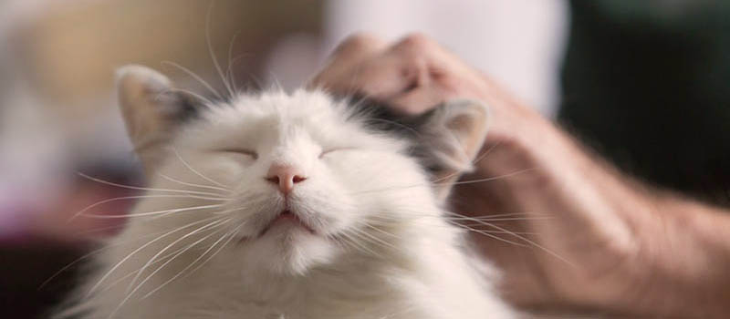

ADOPTION PROCESS
The process to adopting a cat is not complicated and can instead be a fun and rewarding experience as you get to know your potential feline friend.
The Basic Adoption Process
Generally you would start the adoption process by visiting an adoption centre in person or via their online website where you can find a cat that is suitable for you.
You will need to take some time to get acquainted with your desired cat. When you have decided on a cat, application forms can be filled. Some centres may have “an additional 24-hour cooling off period … to give you the opportunity to ensure you have made the right decision and not adopt on impulse.”
In most cases, after requesting for a particular cat, you would sit through a consultation session with the staff of the adoption centre to “ensure that you and the pet you've selected are a good match. During this process they may also review the animal's medical and behavioural records, explain policies and services available to adopters, and help you choose the right pet supplies.”